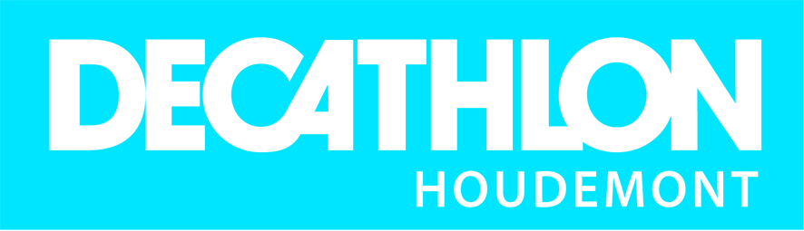

Retrait des dossards et engagements:
Samedi après-midi chez Décathlon Houdemont
de 14h00 à 19h00
2 Avenue des érables, 54180 Houdemont

Le matin de la course sur le lieu d'arrivée (à quelques km du départ) Lieu- dit Fort Pélissier Terre, Vaine, Rue du Fort 54550 Bainville-sur-MadonRetrait des dossards à l’arrivée (Fort Pélissier) de 7H30 à 8H30 et engagements avant le départ au stade de Neuves-Maisons de 7H30 à 8H45.
Déroulement de la course :
Dimanche 10 septembre
Départ : Stade, 540 rue Pasteur, 54230 Neuves Maisons
Arrivée : Fort Pélissier, Rue du Fort 54550 Bainville-sur-Madon
7H30 : Retrait des dossards
9H00 : Départ grand parcours
9H30 : Départ petit parcours
11H00 : Ouverture des stands partenaires sur le site de l'arrivée
12H00 : Premières arrivées du petit parcours
12H30 : Repas sur place
14H00 : Remises des récompenses. Tirage au sort de lots pour les présents